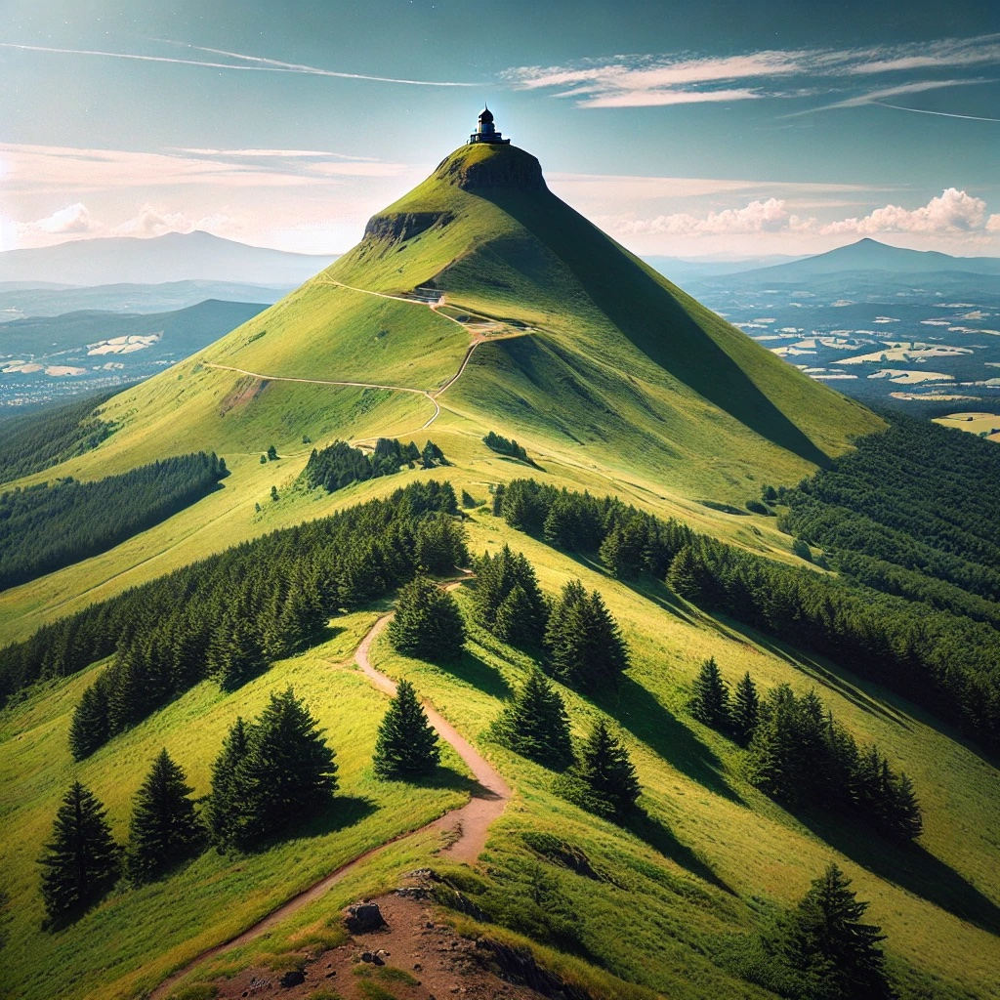

Lac Pavin
Le Puy de Dôme est un volcan emblématique de la chaîne des Puys, classée au patrimoine mondial de l'UNESCO. Ce site naturel offre une vue à couper le souffle sur les monts environnants et les vastes plaines d'Auvergne. En gravissant le sentier des Muletiers ou en prenant le train panoramique, vous pourrez admirer des paysages où se mêlent forêts verdoyantes, roches volcaniques et prairies luxuriantes. Le sommet est également un lieu d'observation idéal pour les amateurs d'astronomie et les passionnés d'histoire, avec les vestiges d'un temple dédié à Mercure.

Détails techniques
Durée de la randonnée : Environ 2 heures pour monter à pied par le sentier des Muletiers.
Difficulté : Moyenne. La montée peut être raide par endroits, mais elle est accessible à la plupart
des randonneurs.
Distance : 4 km aller-retour. Il est possible de réduire la durée en prenant le train
panoramique.
Conseil : Emportez de bonnes chaussures de randonnée et de l'eau. La montée peut être exigeante.